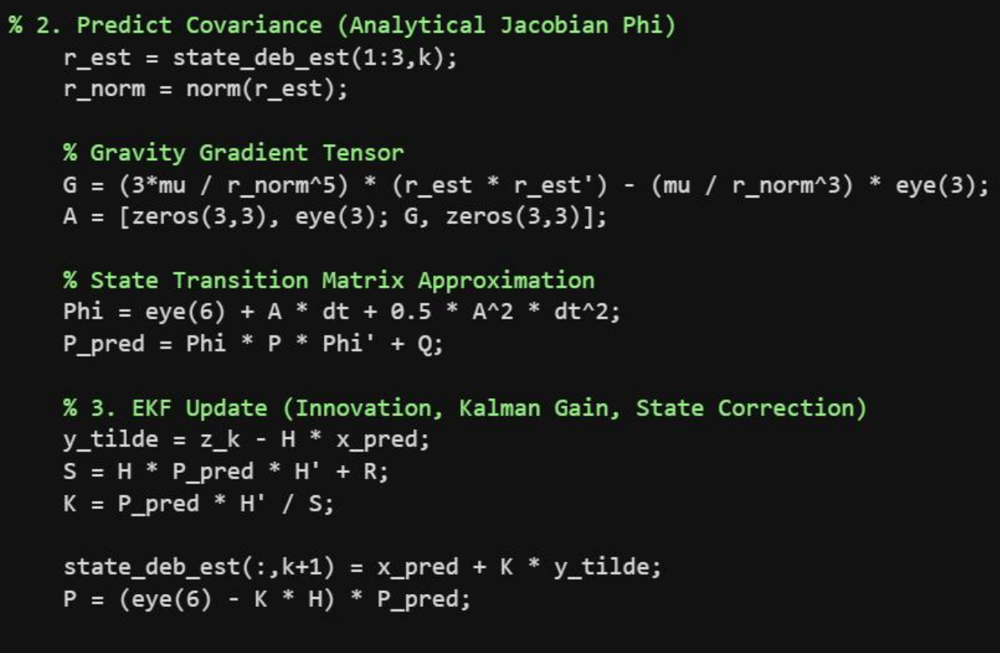

Engineering objective
Investigate how a small-satellite orbit model could combine estimated debris motion with a proximity-triggered avoidance maneuver. The MATLAB script propagates spacecraft and debris states, generates noisy synthetic position measurements, and uses an extended Kalman filter (EKF) to estimate the debris state.
Methods and governing model
1 · Orbit propagation
The state vector is x = [r_x, r_y, r_z, v_x, v_y, v_z]ᵀ. A fourth-order Runge–Kutta (RK4) integrator propagates both objects using two-body gravity with J2 perturbations.
The modeled orbit uses approximately 550 km initial satellite altitude, with the debris initialized separately.
2 · State estimation
A simulated sensor supplies Cartesian debris position observations corrupted by Gaussian noise (50 m standard deviation per axis). The EKF predicts the debris trajectory and updates its state with each measurement.
Its covariance transition uses a truncated state-transition approximation linearized from central gravity; the script does not include J2 partial derivatives in that transition.
3 · Avoidance heuristic
A proximity threshold of 2,500 m triggers a bounded along-track thrust acceleration, with an upper limit of 0.005 m/s². The feedback magnitude depends on separation error and relative-speed magnitude.
This is a simple PD-inspired heuristic, not a fully designed LQR controller or operational collision-probability algorithm.
4 · Telemetry
The script plots simulated trajectories, true and estimated spacecraft-to-debris separation, and EKF position-estimation error. These displays help inspect qualitative behavior; plots alone do not establish safety or robustness.
Simulation figures


Validation questions and next experiments
Before making quantitative claims about collision avoidance, the project should be extended with:
- A no-control baseline and a logged minimum true separation for each simulation.
- Repeatable random seeds and Monte Carlo runs across different encounter geometries and sensor-noise levels.
- RK4 time-step convergence checks and independent comparison with a trusted orbit propagator.
- EKF consistency checks, including innovations and covariance stability.
- Controller improvements that use signed closing rate or time-to-closest-approach rather than relative-speed magnitude alone.
- Propellant or Δv accounting, maneuver feasibility constraints, and a more realistic observation model.
Important distinction: These are planned validation tests—not experimental results already obtained.
Code and reproducibility
The complete MATLAB prototype is publicly available. This case study intentionally avoids inventing a success rate, a minimum miss distance, or other metrics not established by the linked source and recorded experiment outputs.